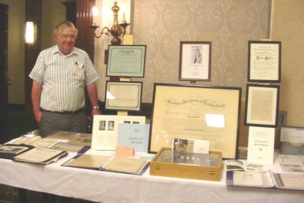
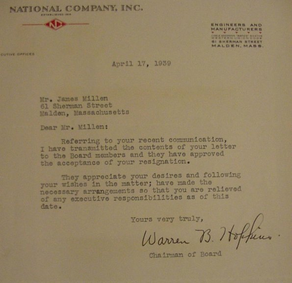

| 
Pictured
above is that of Merrill W. Bancroft standing beside his excellent
display of James Millen memorabilia at the 2001 Antique Wireless
Association conference in Rochester, NY. It was a matter of only
a few months after Millen's death that his estate was offered
for auction. Much of Millen's property, including his original
1936 station had already been donated to the AWA before his death
(see elsewhere on this website for details.) This display won
"The Display Award " and finished first in the Vacuum
Tube Transmitters and Receivers display category.
How
did Merrill find all these Millen items? In his own words, "I
live in Townsend, Ma.My most significant collecting experience
and luckiest day was the day of the auction at Jim's estate at
the end of Tarbox Lane, his private road in North Reading, Ma.
Three factors contributed to this day for me. First there was
a meet at the Rhode Island Wireless and Steam Museum that day
and second, the temperature was a record 98 degrees. Third, John
Nagle had an auto breakdown on the way up from Herndon, Va. and
never made it. The end result was that there was nobody interested
in the stuff but me. I also should mention that that Sunday for
some reason, and the first time ever, I picked up a copy of the
Boston Globe and saw the notice of Jims estate auction. I'm sure
it was well known that Jim had a very complete collection of radio
periodicals. Well the first lot that went up included a complete
set of QST's in binders with perhaps 50 extra pre 1920 issues.
I started off the bidding at $25 dollars and that is also where
it ended! Suffice to say this trend continued through the entire
magazine auction to the extent that I had seven pickup loads of
bound material and other paper to take home. I hate to think what
would have happened to this stuff, especially the personal items
such as the ME degree if I hadn't gone because no one else was
interested in any of it. I had two regrets. All of the QSL cards
that Jim had around the upper walls of his ham shack (which were
shown in the CQ article) were probably destroyed because I couldn't
take the time to get them down. The other was the DFP receiver
prototypes some of were offered to me but I had no room for. Remember
that I had a huge pile of material to get home in an open pickup
and it was clouding up and it did rain just after I unloaded the
last load."
Merrill's
story is not uncommon and would be a dream come true for many
collectors. At the AWA conference Merrill did mention that someday
all this material will be donated to the AWA museum so that it
can live on for future generations of radio collectors and Millen
enthusiasts. It is a shame that some items may have found the
end of existance, including those rare DFP receiver prototypes.
But perhaps even those were saved and will resurface again someday.
Returning
to the display. The large framed item in the center is Millen's
original Mechanical Engineering diploma from the Stevens Institute
of Technology. Among the paperwork are original letters to and
from Millen and Clarence D. Tuska relating to the patent on the
famous National PW dial drive assembly, often refered to as the
HRO dial. For those Millen collectors is his original resignation
letter to the National Company and their return letter of acceptance.
Both dated April 17, 1939.
Below
is the original letter from National's Board Chairman Warren B.
Hopkins accepting Millen's resignation.

After
his resignation James Millen went on to form the James Millen
Manufacturing Company in Malden, MA. Jim's reasons for leaving
National are addressed in other articles available on this website.
|